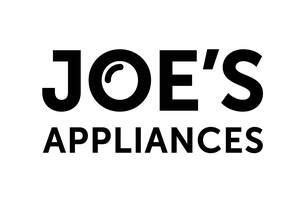
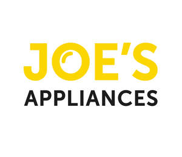

Trade Mark Journal No.2025/046 14 November 2025
UK00004285188 28 October 2025 (35,36,37,39,40,42)
Mark 1

Mark 2

- Class 35
- Advertising, marketing and sales promotions; online ordering services; retail services and wholesale services connected with the sale of household electronic apparatus, electronic household appliances, kitchen appliances, food and beverage processing and preparation machines and apparatus, electric kitchen machines, electric kitchen mixers, electric meat slicers for kitchen use, electrical vegetable slicers, food choppers, electric, kitchen knives, electric, whisks, electric, for household purposes, electric food blenders, electric juicers, sweeping, cleaning, washing and laundering machines, electrical apparatus and machines for kitchen and laundry use, floor cleaning apparatus and machines, vacuum cleaners, information technology and audio visual, multimedia and photographic devices, apparatus and instruments for conducting, switching, transforming, accumulating, regulating or controlling electricity, safety, security, protection and signalling devices, electrical power adaptors, power controllers and capacitators, power regulatory equipment, electric plugs, electrical and electronic components, alarms and warning equipment, telecommunication apparatus, mobile telephones, junction boxes, cables and wires, computers, computer hardware, notebook computers, tablet computers, computer peripheral devices, monitors, electronic communication equipment and instruments, electronic organizers, electronic book readers, portable media players, digital audio and audio visual players, disc players, audio equipment and apparatus, cameras, lens, camera and lens cases, televisions, radios, DVD players, CD players, video players, MP3 players, record players, docking stations for digital music players, global positioning system (GPS) devices, computer systems, covers and cases for computers, tablet computers and mobile telephones, batteries, chargers, headphones, earbuds, speakers, monitoring instruments, weighing scales, kitchen timers, thermometers, lighting apparatus and installations, light bulbs, HVAC systems (heating, ventilation and air conditioning), apparatus for heating, apparatus for steam generating, apparatus for cooking, ovens, apparatus for refrigerating, fridges, freezers, apparatus for drying, apparatus for ventilating, food and beverage cooking, heating, cooling and treatment equipment, coffee makers, kettles, toasters, laundry dryers, hair dryers, electric clothes dryers, air dryers, hand dryers, intelligent gateways for communication, mobile apps, recorded content, media content, recorded media, computer software, audio and audio-visual recordings, pre-recorded videos, electronic publications, podcasts, downloadable publications, printed matter, bags and articles for packaging, wrapping and storage made from paper, cardboard or plastics, packaging materials, plastic film for wrapping, packaging wrappers of plastic, articles of packaging for wrapping and storage, sticky tape, adhesive packaging tapes, adhesive tape dispensing machines [office requisites], parts and fittings for all the aforesaid goods; business management; business administration; business assistance; provision of business and commercial information; office functions; computerised data verification; database management services; data processing; data management; consultancy, information and advisory services relating to all the aforesaid services.
- Class 36
- Financial services; monetary services; financial lending; financial affairs; hire purchase financing; financial leasing; insurance services; warranty services; insurance guarantees; credit services; consultancy, information and advisory services to all the aforesaid services.
- Class 37
- Installation, maintenance, renovation and repair of lighting apparatus and installations and sanitary apparatus; installation, maintenance, repair and servicing of household and kitchen appliances; installation, maintenance and repair of electronic equipment; services of electricians; plumbing; consultancy, information and advisory services to all the aforesaid services.
- Class 39
- Transport services; distribution services; packaging and storage; warehousing; delivery services; information services relating to the transport of goods; courier services; logistics, namely the transport of goods by road, rail, ship and air; container rental; leasing of storage units; leasing of warehouse units; removal services; tracking and tracing of shipments; consultancy, information and advisory services relating to all the aforesaid services.
- Class 40
- Recycling services; waste recycling services; waste destruction; waste management services (recycling); information, advice and consultancy services relating to all the aforesaid services.
- Class 42
- Scientific and technological services and research and design relating thereto; technical management of household appliances and computer equipment; technical advice and consultancy services in relation to lighting apparatus and installations, sanitary apparatus household and kitchen appliances, electronic equipment and computer equipment; diagnostic testing services for others; computer aided diagnostic testing services; information, advice and consultancy services relating to all the aforesaid services.
PRODUCT CARE GROUP LIMITED
Representative: Trademark Eagle Limited